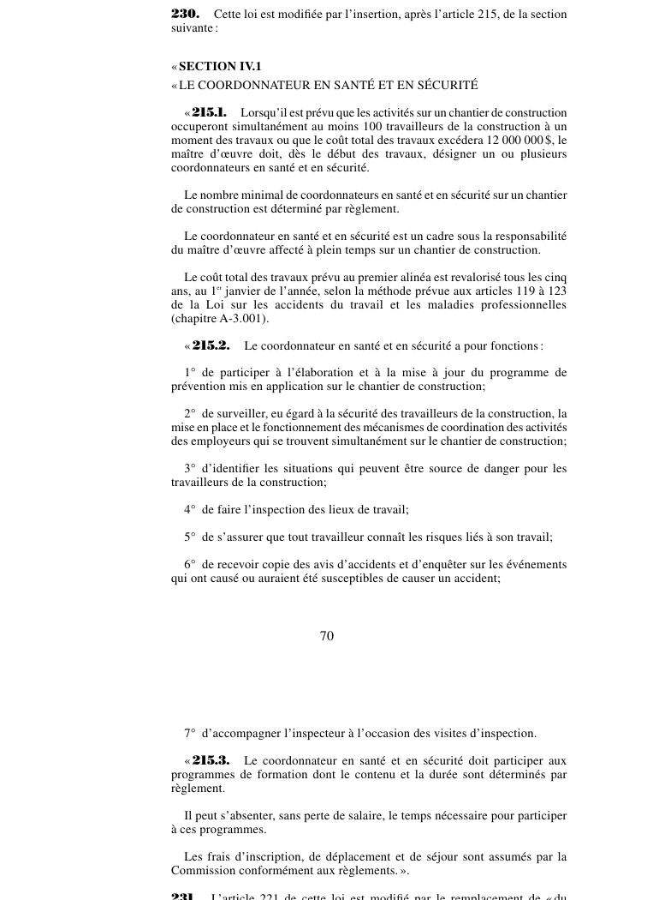

art-230-LMRSST : insertion après art. 215 LSST
Article modificateur de la LMRSST (L.Q. 2021, c. 27).
- Insère un nouvel article dans la Loi sur la santé et la sécurité du travail (RLRQ c. S-2.1).
📄 PDF officiel (page 70) · 🌐 LegisQuébec
Texte officiel
Cette loi est modifiée par l’insertion, après l’article 215, de la section suivante : « SECTION IV.1 « LE COORDONNATEUR EN SANTÉ ET EN SÉCURITÉ
« 215.1. Lorsqu’il est prévu que les activités sur un chantier de construction occuperont simultanément au moins 100 travailleurs de la construction à un moment des travaux ou que le coût total des travaux excédera 12 000 000 $, le maître d’œuvre doit, dès le début des travaux, désigner un ou plusieurs coordonnateurs en santé et en sécurité.
Le nombre minimal de coordonnateurs en santé et en sécurité sur un chantier de construction est déterminé par règlement.
Le coordonnateur en santé et en sécurité est un cadre sous la responsabilité du maître d’œuvre affecté à plein temps sur un chantier de construction.
Le coût total des travaux prévu au premier alinéa est revalorisé tous les cinq ans, au 1 janvier de l’année, selon la méthode prévue aux articles 119 à 123 de la Loi sur les accidents du travail et les maladies professionnelles (chapitre A-3.001).
« 215. 2. Le coordonnateur en santé et en sécurité a pour fonctions :
1° de participer à l’élaboration et à la mise à jour du programme de prévention mis en application sur le chantier de construction;
2° de surveiller, eu égard à la sécurité des travailleurs de la construction, la mise en place et le fonctionnement des mécanismes de coordination des activités des employeurs qui se trouvent simultanément sur le chantier de construction;
3° d’identifier les situations qui peuvent être source de danger pour les travailleurs de la construction;
4° de faire l’inspection des lieux de travail;
5° de s’assurer que tout travailleur connaît les risques liés à son travail;
6° de recevoir copie des avis d’accidents et d’enquêter sur les événements qui ont causé ou auraient été susceptibles de causer un accident;
7° d’accompagner l’inspecteur à l’occasion des visites d’inspection.
« 215. 3. Le coordonnateur en santé et en sécurité doit participer aux programmes de formation dont le contenu et la durée sont déterminés par règlement.
Il peut s’absenter, sans perte de salaire, le temps nécessaire pour participer à ces programmes.
Les frais d’inscription, de déplacement et de séjour sont assumés par la Commission conformément aux règlements. ».
Texte de l’article 230 LMRSST, extrait de la couche texte du PDF officiel (page 70), sans OCR ni retouche. La capture ci-dessous et le PDF font foi.
{kind=link}

Toucher l'image pour l'agrandir🔗 Ouvrir a cette page : LMRSST.pdf : page 70
- Insère un nouvel article dans la Loi sur la santé et la sécurité du travail (RLRQ c. S-2.1), après l'art. 215.
Portée et effet
Adopté dans le cadre de la réforme de 2021 modernisant le régime de santé et de sécurité du travail, l'article 230 de la LMRSST insère une nouvelle disposition dans la LSST, en lien avec art. 215 LSST. Le texte en vigueur de la disposition visée intègre désormais cette modification ; le libellé exact figure dans la capture officielle ci-dessus. Le chapitre II de la LMRSST modernise la LSST : mécanismes de prévention et de participation des travailleurs, régime intérimaire et rôles des intervenants en santé et sécurité.
La jurisprudence porte sur la disposition modifiée, art. 215 LSST, et non sur l'article modificateur lui-même (les décisions et leurs PDF sont rassemblés sur la page de cet article).
Voir aussi
- 🎯 Article(s) modifié(s) : art. 215 LSST · obligation : l'article 26 de la Loi sur les relations du travail, la formation professionnelle et la gestion de la main-d'oeuvre dans l'industrie de la construction s'applique, compte tenu des adaptations nécessaires, au représentant en santé et en sécurité.
- 🗓️ Entrée en vigueur : 1er janvier 2023 (partiel : voir art. 313 ¶5) (voir art. 313 LMRSST)
- 📚 Chapitre : Chap. II : modifications à la LSST
- ↑ Loi : LMRSST
Pages qui pointent ici (1)
- LMRSST : Chapitre II : Modifications à la LSST Recueil législatif